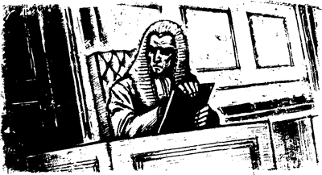
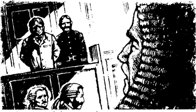
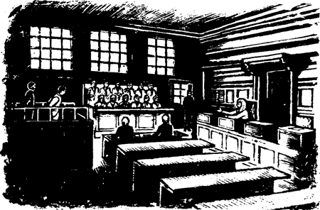
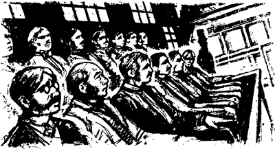

Đúng mười giờ, tôi bước vào tòa án Old Bailey. Có một cảnh sát đứng gần cửa của tòa nhà nổi tiếng này.
Anh cảnh sát thốt lên:
'Chào buổi sáng, thưa ông!'.
Tôi nói cho anh ấy biết tên mình. Anh ấy ghi tên tôi vào một tờ giấy.
Có rất nhiều phòng xử án ở tòa Old Bailey. Hôm đó, mỗi phòng xử án xét xử một vụ án khác nhau. Có một danh sách các phiên tòa được niêm yết trên tường, gần cửa ra vào. Tôi bắt đầu đọc danh sách đó.
Chẳng mấy chốc, tôi đã thấy bất ngờ. Ở một phòng xử án kia, họ chuẩn bị xét xử một vụ giết người. Một người đàn ông bị buộc tội giết bạn của mình. Hung thủ đã giết nạn nhân bằng dao.
Tôi đã đọc về vụ giết người này trên báo. Tôi vẫn nhớ ngày tháng 9 đó. Buổi sáng, tôi đọc về vụ giết người trên báo. Sau đó, tôi thấy phòng ngủ của nạn nhân và con dao. Rồi hai người đàn ông lạ mặt đi qua cửa sổ phòng tôi!
Tôi nói chuyện với một cảnh sát khác. Anh ta chỉ vào một cánh cửa.
'Ông phải vào đó, thưa ông,' anh ta nói.
Vài phút sau, tôi ngồi trong một phòng xử án cùng với mười chín người đàn ông khác. Mười hai người trong chúng tôi chuẩn bị thành viên ban bồi thẩm của phiên xử về vụ giết người.
Hai luật sư đang ngồi gần phía trước phòng xử án. Chúng tôi đợi thẩm phán và bị cáo.
Một cánh cửa mở ra. Một cảnh sát dẫn bị cáo vào phòng xử án.
Tôi nhìn bị cáo và lại thấy bất ngờ. Tôi đã gặp người đàn ông này trước đây. Tôi đã gặp anh ta vào tháng Chín. Tôi đã gặp anh ta vào ngày sau vụ giết người. Anh ta chính là Người đàn ông sợ hãi!
Rồi một cánh cửa khác mở ra và thẩm phán bước vào phòng xử án. Mọi người đứng lên. Tôi nhìn vị thẩm phán. Đó là một ông già. Ông mặc áo choàng đỏ. Ông ngồi xuống. Rồi mọi người đều ngồi xuống.

Thẩm phán nói với bị cáo.
'Ông bị buộc tội giết người,' ông ta nói. 'Ông có Tội hay Không có tội?'
'Thưa ông, tôi Không có tội,' bị cáo trả lời.
'Chúng ta sẽ chọn ra các thành viên ban bồi thẩm,' ông ấy nói.
Ông ấy đọc một cái tên từ danh sách.
'Ông Rodney Black,' ông ấy nói.
Một người đàn ông gần tôi đứng dậy. 'Có, thưa ngài,' anh ta nói.
'Ông có quen biết bị cáo không?' thẩm phán hỏi.
'Không, thưa ngài,' ông Black nói.
'Ông sẽ cố gắng tìm ra sự thật về tội ác này chứ?' thẩm phán hỏi.
'Vâng, thưa ngài,' ông Black nói.
'Ông Black, ông sẽ là một thành viên của ban bồi thẩm này,' thẩm phán nói.
Thế rồi thẩm phán lại đọc một cái tên khác trong danh sách của ông ấy. Ông ấy hỏi những câu hỏi này với một người đàn ông khác.
Tên tôi là tên thứ sáu trong danh sách của thẩm phán.
'Ông George Fotherley,' thẩm phán nói.
Tôi đứng dậy và nói, 'Có, thưa ngài.'
Đột nhiên, bị cáo bắt đầu hét lên.
'Không! Ông ta không được là thành viên của ban bồi thẩm,' người đàn ông hét lên. 'Phiên tòa này sẽ không công bằng!'
'Ông có quen biết bị cáo không, ông Fotherley?' thẩm phán hỏi tôi.
'Không, thưa ngài,' tôi nói. 'Tôi không quen biết ông ta.'
'Ông có quen biết ông Fotherley không?' thẩm phán hỏi bị cáo.
'Không, thưa ngài,' người đàn ông nói rất nhỏ.
'Nhưng ông không thích ông Fotherley à?' thẩm phán hỏi.
'Tôi - tôi không biết, thưa ngài,' bị cáo nói.
Luật sư của bị cáo - luật sư bào chữa - đứng dậy. Ông ấy đến bên bị cáo và nói nhỏ vài phút.
Người đàn ông đó đã sợ hãi. Nhưng anh ta không nói gì với luật sư. Người luật sư ngồi xuống.
'Ông có muốn nói gì không?' thẩm phán hỏi bị cáo.

'Không, thưa ngài,' bị cáo nói.
'Ông Fotherley,' thẩm phán nói. 'Ông sẽ cố gắng tìm ra sự thật về tội ác này chứ?'
'Có, thưa ngài,' tôi trả lời.
'Ông sẽ là một thành viên của ban bồi thẩm này,' thẩm phán nói.
chẳng mấy chốc, thẩm phán đã chọn ra mười hai thành viên của ban bồi thẩm. Tám người kia đã rời đi đến một phòng xử án khác.
'Ai sẽ là trưởng đoàn bồi thẩm?' thẩm phán hỏi. 'Trưởng đoàn sẽ thay mặt cho mọi thành viên của ban bồi thẩm. Các vị bồi thẩm, các vị sẽ có những câu hỏi về phiên tòa. Trưởng đoàn sẽ hỏi tôi những câu hỏi này. Anh ta sẽ cho tôi biết về những vấn đề của các vị. Anh ta sẽ hỏi các thành viên khác của ban bồi thẩm về phiên tòa.'
'Cuối phiên tòa, ban bồi thẩm sẽ đưa ra quyết định của họ,' thẩm phán nói. Trưởng đoàn sẽ nói với tôi quyết định của ban bồi thẩm. Anh ta sẽ nói, "Bị cáo có Tội." Hoặc anh ta sẽ nói, "Bị cáo Không Có Tội." Ai sẽ là trưởng đoàn?'
Tôi không muốn làm trưởng đoàn bồi thẩm. Không ai muốn làm trưởng đoàn. Trong một thoáng, không ai nói gì. Rồi cánh tay phải của tôi bắt đầu cử động. Có phải có ai đó đang đẩy cánh tay tôi không? Tôi nhìn quanh. Không ai chạm vào tôi cả.
Đột nhiên tôi nói, 'Tôi sẽ là trưởng đoàn, thưa ngài.'
Tại sao tôi lại nói như vậy? Tôi không biết nữa.
'Cảm ơn ông, ông Fotherley,' thẩm phán nói.
Rồi thẩm phán lại nói với tất cả chúng tôi.
'Các thành viên ban bồi thẩm,' ông ta nói. 'Phiên tòa này sẽ là một phiên tòa dài. Nó sẽ kéo dài mười một ngày. Có rất nhiều bằng chứng, và có rất nhiều nhân chứng. Các nhân chứng sẽ cung cấp bằng chứng của mình. Một số nhân chứng sẽ kể cho chúng ta về người đã chết - nạn nhân. Một số nhân chứng sẽ kể cho chúng ta về bị cáo. Và một số nhân chứng sẽ kể cho chúng ta về phòng ngủ của người đàn ông đã bị giết và con dao. Tất cả những điều này sẽ là bằng chứng.'

'Vào hai ngày cuối của phiên tòa,' thẩm phán nói, 'các luật sư sẽ không nói chuyện với các nhân chứng. Họ sẽ nói chuyện với các vị, các thành viên ban bồi thẩm. Họ sẽ nói về các bằng chứng. Sau đó, luật sư công tố sẽ nói, "Người đàn ông này đã giết bạn của mình. Người đàn ông này có Tội." Luật sư bào chữa sẽ nói, "Không, người đàn ông này đã Không giết bạn của mình. Người đàn ông này Không có Tội." Các vị phải lắng nghe các luật sư một cách cẩn thận.'
'Sau đó, tôi sẽ nói chuyện với các vị,' thẩm phán nói. 'Tôi sẽ nói với các vị về tất cả các bằng chứng. Sau đó, các vị sẽ đưa ra quyết định của mình. Các vị sẽ tự hỏi, "Bị cáo có Tội hay Không có tội? Anh ta có giết bạn mình không, hay anh ta Không giết bạn mình?" Các vị sẽ đưa ra quyết định của mình.'
'Phiên tòa sẽ bắt đầu ngay bây giờ,' thẩm phán nói. 'Các thành viên ban bồi thẩm, xin lắng nghe tất cả các bằng chứng một cách cẩn thận.'
———
Tôi có biết thêm một số thông tin bất ngờ nữa trong ngày đầu tiên của phiên tòa. Tôi đang ngồi cùng những thành viên khác của ban bồi thẩm và nghe lời khai. Luật sư công tố đang kể cho chúng tôi về vụ giết người. Và ông ta đang hỏi cảnh sát một số câu hỏi về tử thi của nạn nhân.
'Thưa ngài, tôi đã tìm thấy thi thể,' cảnh sát nói. 'Hung thủ đã đâm một nhát dao vào lưng nạn nhân. Nhát dao đó cách cổ nạn nhân sáu inch.'
Tôi nghe lời viên cảnh sát và tôi nhìn quanh. Tôi nhìn nhanh qua những người bồi thẩm khác.
'Có mười ba thành viên trong ban bồi thẩm này!' Tôi nghĩ. 'Có thêm một người nữa ở đây!'

Nhưng rồi tôi đếm lại cẩn thận. Và chỉ có mười hai người, không phải mười ba người. Điều này xảy ra hai lần vào buổi sáng. Và nó lại xảy ra lần nữa vào buổi chiều.
Và hai lần vào buổi chiều, tôi tự hỏi: 'Tại sao cánh tay tôi lại cử động? Có phải có ai đó đang đẩy cánh tay tôi không?' Nhưng không ai chạm vào tôi cả!
———
Cuối ngày đầu tiên, thẩm phán lại nói chuyện với ban bồi thẩm.
'Các vị không được về nhà cho đến khi phiên tòa kết thúc,' ông ta nói. 'Tất cả các vị phải ở cùng nhau. Các vị phải nói chuyện với nhau về phiên tòa. Nhưng các vị không được nói với bất kỳ ai khác về phiên tòa.'
'Mỗi đêm, các vị sẽ đến một nhà trọ - London Tavern,' thẩm phán nói. 'Có một căn phòng lớn dành cho các vị tại nhà trọ đó. Các vị sẽ ngủ tại đó. Một cảnh sát sẽ chăm sóc các vị. Tên anh ta là ông Harker. Đừng nói với anh ta về phiên tòa. Chúc ngủ ngon, các thành viên ban bồi thẩm.'